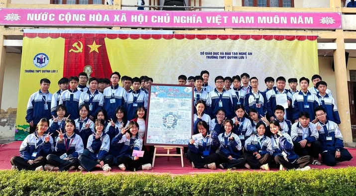
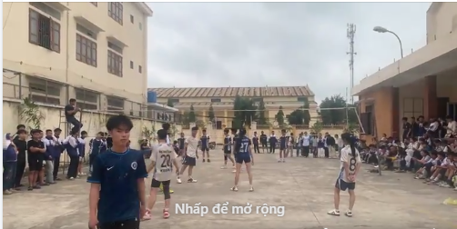
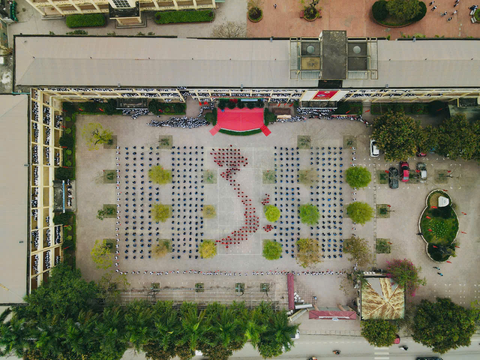

Hoạt động làm báo tường giúp học sinh phát huy khả năng sáng tạo, viết văn, vẽ tranh và làm việc nhóm. Đây là dịp để các lớp thể hiện tinh thần đoàn kết và tình cảm với thầy cô.

Giải bóng chuyền là hoạt động thể thao sôi nổi của nhà trường, giúp học sinh rèn luyện sức khỏe, tinh thần đồng đội và ý chí thi đấu.

Các chương trình văn nghệ chào mừng ngày lễ lớn tạo sân chơi bổ ích, giúp học sinh phát triển năng khiếu và tự tin biểu diễn trước đám đông.